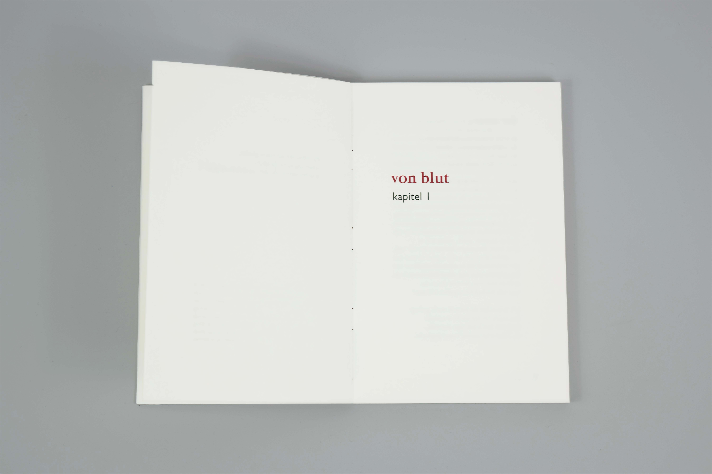
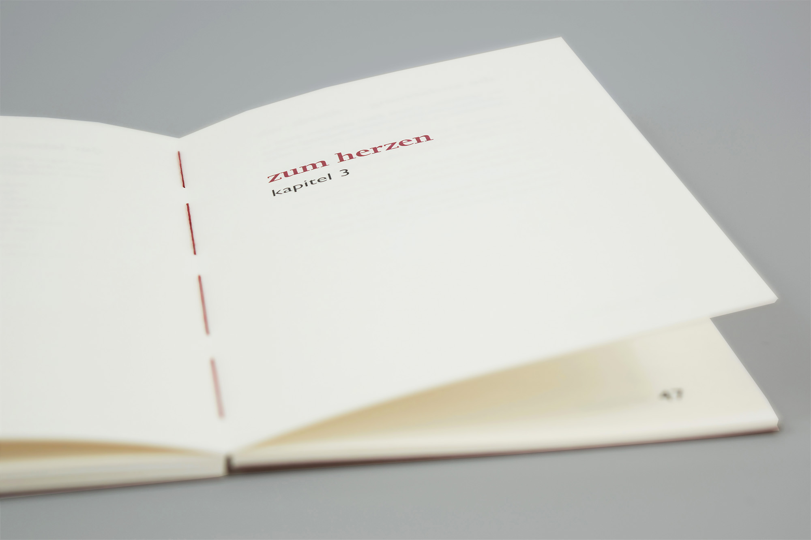
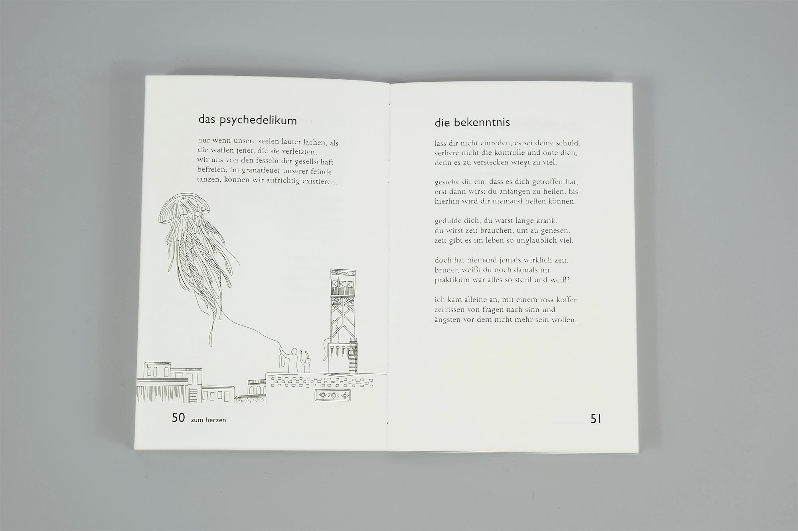

- Der Gedichtband ist im Rahmen meiner Bachelorarbeit „Lyrik und Instagram – Visuelle Aufbereitung von Gedichten in analogen und digitalen Medien“ entstanden.
- Herausforderungen
- Lyrik genießt seit jeher ein Nischendasein. Sie gilt als schwierig und langweilig, und besitzt unter jungen Erwachsenen kaum noch Leser. Dabei hat sie das Potential in wenigen Worten viele Emotionen zu transportieren.
- Lösungsansatz
- Für den Gedichtband habe ich einfach verständliche kurze Gedichte über das Erwachsenwerden verfasst und diese der Einfachheit halber in absoluter Kleinschreibung gesetzt. Die Grafiken habe ich minimalistisch gestaltet, um die Aussage in den Vordergrund zu stellen. Der Innenteil ist größtenteils schwarzweiß gehalten mit der Auszeichnungsfarbe Rot. Die offene Fadenheftung mit rotem Faden ist ein Hingucker im Bücherregal.
- Auftrag: Satz und Covergestaltung eines Gedichtbandes
- Entstehung: Einzelprojekt im Rahmen der Bachelorarbeit
- Datum: Dezember 2019



